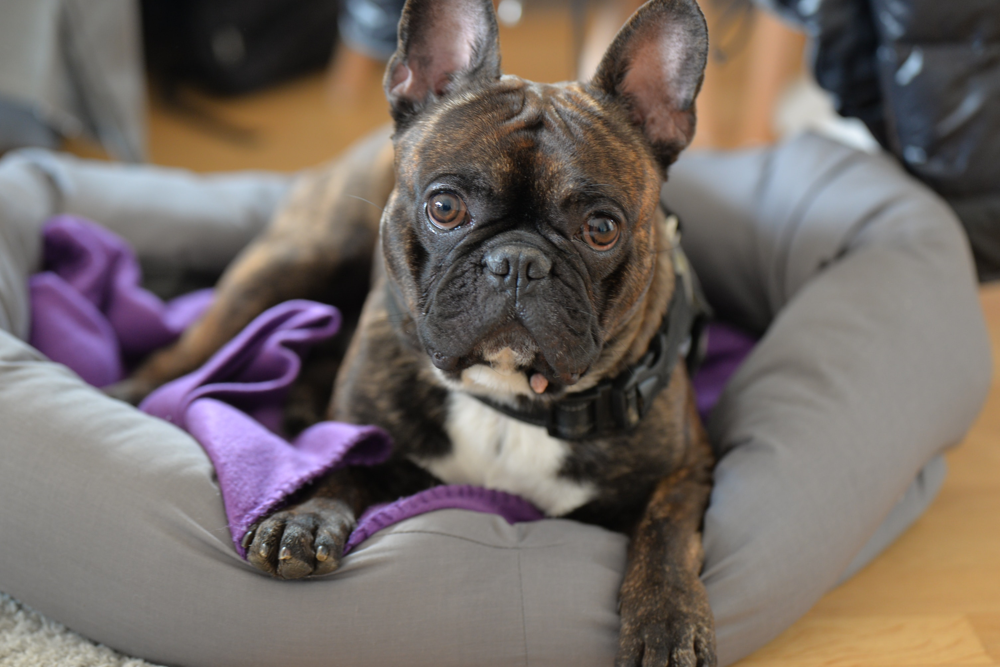

몸높이 30~41㎝, 몸무게 22~25㎏ 가량으로[1], 영국의 국견으로 영국 잉글랜드 원산이다. 평균수명은 8~10년. 오랜 역사를 가진 투견으로, 영국 토착견과 마스티프로와의 교배로 만들어졌다고 하나, 기원은 분명하지 않다. 이름의 뜻은 숫소(bull) 개(dog)로 소를 잡기 위해 태어난 견종이다. 머리가 크고, 아래턱이 위로 올라가 있으며, 안면부의 폭이 넓다. 이마는 평평하며, 주름이 있고, 주둥이는 매우 짧다. 불도그같이 주둥이가 짧은 개들을 단두종이라 부르는데 코가 위로 벌어져 있어 잠 잘 때 코를 심하게 곤다. 귀는 머리 윗부분에 위치하며 작고 엷다. 목은 굵고 짧으며 강인한 인상을 풍긴다. 등은 짧고, 어깨폭이 넓은 반면, 허리는 약간 좁다. 가슴폭이 아주 넓고, 앞다리가 뒷다리보다 짧고 튼튼하다. 꼬리는 굵지만, 길이가 짧고 끝은 가늘다. 종류가 의외로 상당히 많다. 우리가 흔히 아는 잉글리쉬 불도그와 아메리칸 불도그 [2],프렌치 불도그 이외에도 콘티넨탈 불도그, 올드 잉글리쉬 불도그가 있다. 유전적 결함이 매우 심한 종이다. 인위적으로 교배된 종이 으레 유전병이 많지만 불도그는 그중에서도 유전병이 매우 심각한 편이다. 특히 단두종의 대표종이라 호흡기, 구강 관련 질병이 많다. 호흡 자체가 힘들어 항상 숨을 가쁘게 내쉰다. 코를 심하게 고는 것도 이 때문이다. 부정교합으로 음식물을 제대로 씹어 삼키는 것도 힘겹다. 고관절 이형성증 때문에 정상적인 거동도 힘들다. 단두종으로 인한 부정교합으로 침을 많이 흘리지만 얼굴에 주름이 많아 침이 고이면서 피부병이 쉽게 발병하곤 한다. 때문에 불도그의 기대 수명은 매우 짧다. 인간으로 따지면 20대 후반 정도인 6년 정도가 불도그의 기대수명이다. 근친 교배로 인한 유전적 결함 때문인지 지능도 매우 나쁘다.[3] 79종의 개 가운데 77위로 최하위권에 랭크되어 있다. # 실제로도 일반적인 개에 비해 학습능력이 떨어지고 공간 지각력, 상황 대처능력이 떨어지는 등 여러 면에서 지능이 매우 떨어지는 행태를 자주 보인다. 또한 모성애가 매우 부족할 뿐만 아니라 자기 새끼를 잘 못알아본다고 한다.
